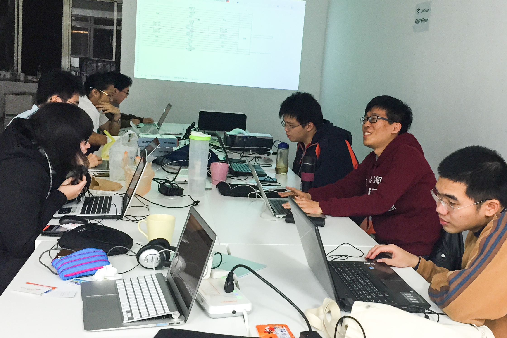

審稿會議
2 月 7 日晚上，審稿委員們依然挑燈夜戰，在眾多優秀的稿件中忍痛取捨著。
議程組長 Pellaeon 表示：「今年的稿件不僅優秀，數量也相當的多，讓我們非常苦惱議程的安排，不過這也代表，SITCON 已經受到越來越多人的關注。」審稿會議是由評分委員事先看過所有投稿議程之後，在會議中針對分數較高的一一討論，並安排進不同的演講廳。評分標準則是以稿件的內容、酷炫程度以及表達能力等三個項目為主，其次會考慮稿件主題的重複性，因為我們由衷地希望會眾能夠接收到不同主題的演講。最大的國際會議廳通常會放委員們覺得最能吸引大家的議程。會後也將有問卷調查詢問會眾對議程的評價，進而讓往後的評委有所依據，到時還請大家一定要填寫哦！
